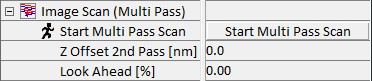

在图像扫描（多通道）参数组中，可以定义双通道提升模式扫描所需的参数。扫描几何形状或扫描速度等参数可以在 图像扫描 参数组中调整。更多信息可在操作指南的 提升模式 和 KPFM 部分找到。
更多信息（操作指南）：

开始多通道扫描
按下此按钮使用此处和 图像扫描 部分中当前输入的参数开始多通道扫描和数据采集。
第二通道 Z 偏移 [nm]
此参数定义第二通道相对于第一通道记录的形貌的高度。
前视 [%]
定义第一通道和第二通道之间沿移动方向的偏移百分比。